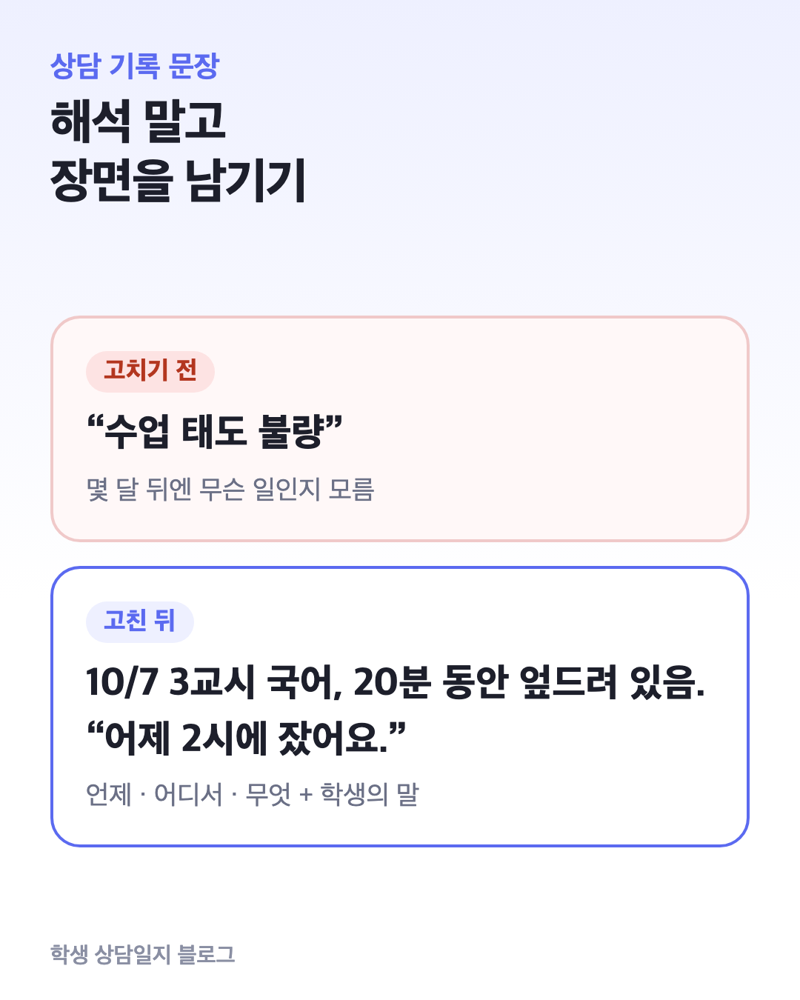
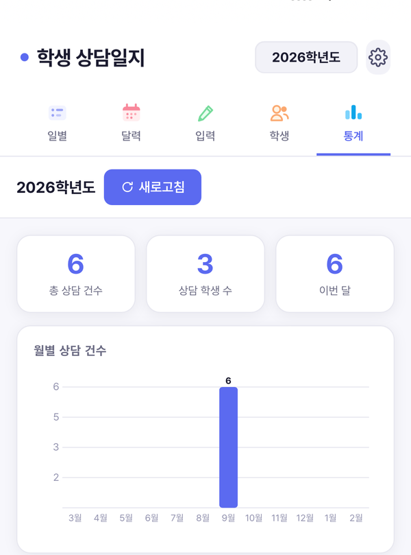

상담 기록 문장 쓰는 법｜사실과 해석을 나누는 5가지 원칙
상담 기록은 쓰는 순간보다 몇 달 뒤에 다시 읽을 때 쓸모가 드러납니다. 학부모 상담 전에, 학년 말 인수인계 때, 생활기록부를 쓸 때 다시 꺼내 보게 되니까요.
그때 “○○이가 수업 태도가 안 좋음” 같은 문장은 거의 도움이 되지 않습니다. 이 글에서는 다시 읽어도 쓸모 있는 기록을 위한 5가지 원칙과 고치기 전후 예시를 정리합니다.
예시는 모두 가상입니다.

1. 해석 대신 장면을 씁니다
“태도가 안 좋다”, “의욕이 없다”는 기록한 사람의 해석입니다. 해석은 시간이 지나면 근거를 잃습니다.
대신 언제, 어디서, 무엇을 했는지 장면을 씁니다.
| 고치기 전 | 고친 뒤 |
|---|---|
| 수업 태도 불량 | 10/7 3교시 국어, 활동 시간 20분 동안 엎드려 있음. 깨우자 “어제 2시에 잤어요”라고 함 |
| 친구들과 사이가 안 좋음 | 10/8 점심시간, 모둠 친구 2명과 자리 문제로 말다툼. 이후 혼자 교실에 남음 |
2. 학생의 말은 따옴표로 그대로
학생이 한 말을 담임의 말로 바꿔 쓰면 뜻이 달라지기 쉽습니다. 핵심 발언은 따옴표 안에 들은 그대로 짧게 남깁니다.
✗ 학생이 학원 때문에 힘들다고 함
○ “학원 끝나면 11시라서 숙제할 시간이 없어요.”
따옴표가 있으면 나중에 학부모와 이야기할 때도 “○○이가 이렇게 말했습니다”라고 그대로 전할 수 있습니다.
3. 담임의 판단은 따로 표시합니다
해석을 아예 쓰지 말라는 뜻은 아닙니다. 담임의 판단은 상담에서 중요한 정보입니다.
다만 사실과 섞지 말고 “판단:”이나 “~로 보임”으로 구분합니다.
사실: 최근 2주 지각 4회, 모두 1교시 시작 후 10분 안팎
판단: 수면 시간이 부족해 보임. 가정 확인 필요
이렇게 나눠 두면 나중에 판단이 틀렸더라도 사실 부분은 그대로 쓸 수 있습니다.
4. 조치와 다음 약속으로 끝냅니다
상담 기록의 마지막 줄은 “그래서 무엇을 하기로 했나”입니다. 조치가 없으면 같은 상담을 반복하게 됩니다.
조치: 다음 주 월·수 아침에 등교 시간 확인하기로 함
다음: 10/20 다시 상담, 지각 횟수 함께 보기
5. 민감한 정보는 필요한 만큼만
상담 중에는 가족 사정, 건강, 교우 관계처럼 민감한 이야기가 나옵니다. 기록에는 지도에 필요한 만큼만 남기고, 다른 학생 이름은 꼭 필요할 때만 씁니다.
- 진단명이나 가족사는 학생·학부모가 직접 말한 범위에서, 필요한 경우에만
- 추측(“가정 형편이 어려운 듯”)은 쓰지 않거나 판단으로 분리
- 기록을 둔 기기나 파일은 잠금을 걸어 둠
상담 기록은 생활기록부와 다릅니다. 생활기록부에 옮길 때는 해당 학년도 학교생활기록부 기재요령을 따라 다시 써야 합니다.
6. 4칸 기록 틀
위 원칙을 매번 떠올리기 어렵다면 칸을 정해 두면 됩니다.
| 칸 | 예시 (가상) |
|---|---|
| 장면 (언제·어디서·무엇) | 10/14 점심시간, 교실에서 1:1 상담 15분. 최근 지각 4회에 대해 |
| 학생의 말 | “게임하다 보면 2시가 넘어요. 아침에 알람을 못 들어요.” |
| 판단 | 수면 부족이 지각의 주된 원인으로 보임. 본인도 고치고 싶어 함 |
| 조치 · 다음 | 12시 전 휴대폰 충전기 거실에 두기로 약속. 10/21 지각 횟수 확인 |
7. 피해야 할 표현
| 피할 것 | 이유 | 대신 |
|---|---|---|
| 항상, 매번, 전혀 | 과장. 사실 확인이 어려움 | “최근 2주 4회”처럼 횟수 |
| 문제아, 산만함 | 낙인. 장면이 없음 | 구체적 행동과 시간 |
| ~인 듯, ~같음 (사실 칸에) | 추측이 사실처럼 읽힘 | 판단 칸으로 옮기기 |
| 잘 지도함 | 무엇을 했는지 없음 | 한 일과 다음 약속 |
전화로 한 학부모 상담은 학부모 전화 상담 요령의 통화 뒤 기록 틀과 함께 보면 좋습니다.
8. 쌓인 기록을 다시 찾으려면

학생 상담일지는 담임이 상담 기록을 학생별로 모아 두는 앱입니다. 중요한 말은 형광펜으로 표시하고, 태그와 검색으로 다시 찾을 수 있어요.
통계 화면에서는 월별·유형별로 상담이 어디에 몰려 있는지 볼 수 있고, 나이스 양식 엑셀로 내보낼 때는 가릴 내용과 뺄 태그를 고를 수 있습니다.
이 블로그는 ‘학생 상담일지’ 앱 운영자가 씁니다. 공식 자료와 대조해 정리했습니다.